Rare Events Logistic Regression for Dichotomous Dependent Variables
The relogit procedure estimates the same model as standard logistic regression (appropriate when you have a dichotomous dependent variable and a set of explanatory variables; see ), but the estimates are corrected for the bias that occurs when the sample is small or the observed events are rare (i.e., if the dependent variable has many more 1s than 0s or the reverse). The relogit procedure also optionally uses prior correction for case-control sampling designs.
With reference classes:
z5 <- zrelogit$new()
z5$zelig(Y ~ X1 + X2, tau = NULL,
case.control = c("prior", "weighting"),
bias.correct = TRUE, robust = FALSE,
data = mydata, ...)
z5$setx()
z5$sim()
With the Zelig 4 compatibility wrappers:
z.out <- zelig(Y ~ X1 + X2, model = "relogit", tau = NULL,
case.control = c("prior", "weighting"),
bias.correct = TRUE, robust = FALSE,
data = mydata, ...)
x.out <- setx(z.out)
s.out <- sim(z.out, x = x.out)
The relogit procedure supports four optional arguments in addition to the standard arguments for zelig(). You may additionally use:
 ,
the true population fraction of ones. Use, for example, tau = c(0.05,
0.1) to specify that the lower bound on tau is 0.05 and the upper
bound is 0.1. If left unspecified, only finite-sample bias correction
is performed, not case-control correction.
,
the true population fraction of ones. Use, for example, tau = c(0.05,
0.1) to specify that the lower bound on tau is 0.05 and the upper
bound is 0.1. If left unspecified, only finite-sample bias correction
is performed, not case-control correction.Note that if tau = NULL, bias.correct = FALSE, the relogit procedure performs a standard logistic regression without any correction.
## Error: there is no package called 'Zelig5'
Due to memory and space considerations, the data used here are a sample drawn from the full data set used in King and Zeng, 2001, The proportion of militarized interstate conflicts to the absence of disputes is 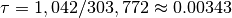. To estimate the model,
data(mid)
z.out1 <- zelig(conflict ~ major + contig + power + maxdem + mindem + years, data = mid, model = "relogit", tau = 1042/303772)
## How to cite this model in Zelig:
## Kosuke Imai, Gary King, and Olivia Lau. 2014.
## relogit: Rare Events Logistic Regression for Dichotomous Dependent Variables
## in Kosuke Imai, Gary King, and Olivia Lau, "Zelig: Everyone's Statistical Software,"
## http://datascience.iq.harvard.edu/zelig
Summarize the model output:
summary(z.out1)
## Model: 1
## Call: relogit(formula = cbind(conflict, 1 - conflict) ~ major + contig +
## power + maxdem + mindem + years, data = ., tau = 0.00343020423212146,
## bias.correct = TRUE, case.control = "prior")
##
## Coefficients:
## (Intercept) major contig power maxdem
## -7.5084 2.4320 4.1080 1.0536 0.0480
## mindem years
## -0.0641 -0.0629
##
## Degrees of Freedom: 3125 Total (i.e. Null); 3119 Residual
## Null Deviance: 3980
## Residual Deviance: 1870 AIC: 1880
## Next step: Use 'setx' method
Set the explanatory variables to their means:
x.out1 <- setx(z.out1)
Simulate quantities of interest:
s.out1 <- sim(z.out1, x = x.out1)
summary(s.out1)
##
## sim x :
## -----
## ev
## mean sd 50% 2.5% 97.5%
## [1,] 0.002405 0.0001483 0.002401 0.002135 0.002718
## pv
## 0 1
## [1,] 0.998 0.002
plot(s.out1)
Zelig-relogit
Suppose that we wish to perform case control correction using weighting (rather than the default prior correction). To estimate the model:
z.out2 <- zelig(conflict ~ major + contig + power + maxdem + mindem + years, data = mid, model = "relogit", tau = 1042/303772, case.control = "weighting", robust = TRUE)
## Error: unused argument (robust = TRUE)
Summarize the model output:
summary(z.out2)
## Model: 1
## Call:
## stats::lm(formula = unem ~ gdp + trade + capmob + as.factor(country),
## data = .)
##
## Coefficients:
## (Intercept) gdp
## -5.843 -0.110
## trade capmob
## 0.144 0.815
## as.factor(country)Belgium as.factor(country)Canada
## -1.599 6.759
## as.factor(country)Denmark as.factor(country)Finland
## 4.311 4.810
## as.factor(country)France as.factor(country)Italy
## 6.905 9.290
## as.factor(country)Japan as.factor(country)Netherlands
## 5.459 -1.459
## as.factor(country)Norway as.factor(country)Sweden
## -2.754 0.925
## as.factor(country)United Kingdom as.factor(country)United States
## 5.601 10.066
## as.factor(country)West Germany
## 3.364
##
## Next step: Use 'setx' method
Set the explanatory variables to their means:
x.out2 <- setx(z.out2)
Simulate quantities of interest:
s.out2 <- sim(z.out2, x = x.out2)
summary(s.out2)
##
## sim x :
## -----
## ev
## mean sd 50% 2.5% 97.5%
## 1 -0.2972 0.6787 -0.3092 -1.655 0.9859
## pv
## mean sd 50% 2.5% 97.5%
## 1 -0.2972 0.6787 -0.3092 -1.655 0.9859
Suppose that we did not know that 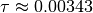, but only
that it was somewhere between 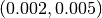. To estimate a
model with a range of feasible estimates for (using the
default prior correction method for case control correction):
z.out2 <- zelig(conflict ~ major + contig + power + maxdem + mindem + years, data = mid, model = "relogit", tau = c(0.002, 0.005))
## How to cite this model in Zelig:
## Kosuke Imai, Gary King, and Olivia Lau. 2014.
## relogit: Rare Events Logistic Regression for Dichotomous Dependent Variables
## in Kosuke Imai, Gary King, and Olivia Lau, "Zelig: Everyone's Statistical Software,"
## http://datascience.iq.harvard.edu/zelig
Summarize the model output:
z.out2
## Model: 1$lower.estimate
##
## Call: (function (formula, data = sys.parent(), tau = NULL, bias.correct = TRUE,
## case.control = "prior", ...)
## {
## mf <- match.call()
## mf$tau <- mf$bias.correct <- mf$case.control <- NULL
## if (!is.null(tau)) {
## tau <- unique(tau)
## if (length(case.control) > 1)
## stop("You can only choose one option for case control correction.")
## ck1 <- grep("p", case.control)
## ck2 <- grep("w", case.control)
## if (length(ck1) == 0 & length(ck2) == 0)
## stop("choose either case.control = \"prior\" ", "or case.control = \"weighting\"")
## if (length(ck2) == 0)
## weighting <- FALSE
## else weighting <- TRUE
## }
## else weighting <- FALSE
## if (length(tau) > 2)
## stop("tau must be a vector of length less than or equal to 2")
## else if (length(tau) == 2) {
## mf[[1]] <- relogit
## res <- list()
## mf$tau <- min(tau)
## res$lower.estimate <- eval(as.call(mf), parent.frame())
## mf$tau <- max(tau)
## res$upper.estimate <- eval(as.call(mf), parent.frame())
## res$formula <- formula
## class(res) <- c("Relogit2", "Relogit")
## return(res)
## }
## else {
## mf[[1]] <- glm
## mf$family <- binomial(link = "logit")
## y2 <- model.response(model.frame(mf$formula, data))
## if (is.matrix(y2))
## y <- y2[, 1]
## else y <- y2
## ybar <- mean(y)
## if (weighting) {
## w1 <- tau/ybar
## w0 <- (1 - tau)/(1 - ybar)
## wi <- w1 * y + w0 * (1 - y)
## mf$weights <- wi
## }
## res <- eval(as.call(mf), parent.frame())
## res$call <- match.call(expand.dots = TRUE)
## res$tau <- tau
## X <- model.matrix(res)
## if (bias.correct) {
## pihat <- fitted(res)
## if (is.null(tau))
## wi <- rep(1, length(y))
## else if (weighting)
## res$weighting <- TRUE
## else {
## w1 <- tau/ybar
## w0 <- (1 - tau)/(1 - ybar)
## wi <- w1 * y + w0 * (1 - y)
## res$weighting <- FALSE
## }
## W <- pihat * (1 - pihat) * wi
## Qdiag <- lm.influence(lm(y ~ X - 1, weights = W))$hat/W
## if (is.null(tau))
## xi <- 0.5 * Qdiag * (2 * pihat - 1)
## else xi <- 0.5 * Qdiag * ((1 + w0) * pihat - w0)
## res$coefficients <- res$coefficients - lm(xi ~ X -
## 1, weights = W)$coefficients
## res$bias.correct <- TRUE
## }
## else res$bias.correct <- FALSE
## if (!is.null(tau) & !weighting) {
## if (tau <= 0 || tau >= 1)
## stop("\ntau needs to be between 0 and 1.\n")
## res$coefficients["(Intercept)"] <- res$coefficients["(Intercept)"] -
## log(((1 - tau)/tau) * (ybar/(1 - ybar)))
## res$prior.correct <- TRUE
## res$weighting <- FALSE
## }
## else res$prior.correct <- FALSE
## if (is.null(res$weighting))
## res$weighting <- FALSE
## res$linear.predictors <- t(res$coefficients) %*% t(X)
## res$fitted.values <- 1/(1 + exp(-res$linear.predictors))
## res$zelig <- "Relogit"
## class(res) <- c("Relogit", "glm")
## return(res)
## }
## })(formula = cbind(conflict, 1 - conflict) ~ major + contig +
## power + maxdem + mindem + years, data = ., tau = 0.002)
##
## Coefficients:
## (Intercept) major contig power maxdem
## -8.0492 2.4320 4.1079 1.0536 0.0480
## mindem years
## -0.0641 -0.0629
##
## Degrees of Freedom: 3125 Total (i.e. Null); 3119 Residual
## Null Deviance: 3980
## Residual Deviance: 1870 AIC: 1880
##
## $upper.estimate
##
## Call: (function (formula, data = sys.parent(), tau = NULL, bias.correct = TRUE,
## case.control = "prior", ...)
## {
## mf <- match.call()
## mf$tau <- mf$bias.correct <- mf$case.control <- NULL
## if (!is.null(tau)) {
## tau <- unique(tau)
## if (length(case.control) > 1)
## stop("You can only choose one option for case control correction.")
## ck1 <- grep("p", case.control)
## ck2 <- grep("w", case.control)
## if (length(ck1) == 0 & length(ck2) == 0)
## stop("choose either case.control = \"prior\" ", "or case.control = \"weighting\"")
## if (length(ck2) == 0)
## weighting <- FALSE
## else weighting <- TRUE
## }
## else weighting <- FALSE
## if (length(tau) > 2)
## stop("tau must be a vector of length less than or equal to 2")
## else if (length(tau) == 2) {
## mf[[1]] <- relogit
## res <- list()
## mf$tau <- min(tau)
## res$lower.estimate <- eval(as.call(mf), parent.frame())
## mf$tau <- max(tau)
## res$upper.estimate <- eval(as.call(mf), parent.frame())
## res$formula <- formula
## class(res) <- c("Relogit2", "Relogit")
## return(res)
## }
## else {
## mf[[1]] <- glm
## mf$family <- binomial(link = "logit")
## y2 <- model.response(model.frame(mf$formula, data))
## if (is.matrix(y2))
## y <- y2[, 1]
## else y <- y2
## ybar <- mean(y)
## if (weighting) {
## w1 <- tau/ybar
## w0 <- (1 - tau)/(1 - ybar)
## wi <- w1 * y + w0 * (1 - y)
## mf$weights <- wi
## }
## res <- eval(as.call(mf), parent.frame())
## res$call <- match.call(expand.dots = TRUE)
## res$tau <- tau
## X <- model.matrix(res)
## if (bias.correct) {
## pihat <- fitted(res)
## if (is.null(tau))
## wi <- rep(1, length(y))
## else if (weighting)
## res$weighting <- TRUE
## else {
## w1 <- tau/ybar
## w0 <- (1 - tau)/(1 - ybar)
## wi <- w1 * y + w0 * (1 - y)
## res$weighting <- FALSE
## }
## W <- pihat * (1 - pihat) * wi
## Qdiag <- lm.influence(lm(y ~ X - 1, weights = W))$hat/W
## if (is.null(tau))
## xi <- 0.5 * Qdiag * (2 * pihat - 1)
## else xi <- 0.5 * Qdiag * ((1 + w0) * pihat - w0)
## res$coefficients <- res$coefficients - lm(xi ~ X -
## 1, weights = W)$coefficients
## res$bias.correct <- TRUE
## }
## else res$bias.correct <- FALSE
## if (!is.null(tau) & !weighting) {
## if (tau <= 0 || tau >= 1)
## stop("\ntau needs to be between 0 and 1.\n")
## res$coefficients["(Intercept)"] <- res$coefficients["(Intercept)"] -
## log(((1 - tau)/tau) * (ybar/(1 - ybar)))
## res$prior.correct <- TRUE
## res$weighting <- FALSE
## }
## else res$prior.correct <- FALSE
## if (is.null(res$weighting))
## res$weighting <- FALSE
## res$linear.predictors <- t(res$coefficients) %*% t(X)
## res$fitted.values <- 1/(1 + exp(-res$linear.predictors))
## res$zelig <- "Relogit"
## class(res) <- c("Relogit", "glm")
## return(res)
## }
## })(formula = cbind(conflict, 1 - conflict) ~ major + contig +
## power + maxdem + mindem + years, data = ., tau = 0.005)
##
## Coefficients:
## (Intercept) major contig power maxdem
## -7.1300 2.4320 4.1080 1.0536 0.0480
## mindem years
## -0.0641 -0.0629
##
## Degrees of Freedom: 3125 Total (i.e. Null); 3119 Residual
## Null Deviance: 3980
## Residual Deviance: 1870 AIC: 1880
##
## $formula
## cbind(conflict, 1 - conflict) ~ major + contig + power + maxdem +
## mindem + years
## <environment: 0x1092490d8>
##
## attr(,"class")
## [1] "Relogit2" "Relogit"
## Next step: Use 'setx' method
Set the explanatory variables to their means:
x.out2 <- setx(z.out2)
Simulate quantities of interest:
s.out <- sim(z.out2, x = x.out2)
## Error: no applicable method for 'vcov' applied to an object of class
## "c('Relogit2', 'Relogit')"
summary(s.out2)
##
## sim x :
## -----
## ev
## mean sd 50% 2.5% 97.5%
## 1 -0.2972 0.6787 -0.3092 -1.655 0.9859
## pv
## mean sd 50% 2.5% 97.5%
## 1 -0.2972 0.6787 -0.3092 -1.655 0.9859
plot(s.out2)
The cost of giving a range of values for is that point
estimates are not available for quantities of interest. Instead,
quantities are presented as confidence intervals with significance less
than or equal to a specified level (e.g., at least 95% of the
simulations are contained in the nominal 95% confidence interval).
Like the standard logistic regression, the stochastic component for the rare events logistic regression is:
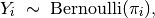
where  is the binary dependent variable, and takes a value
of either 0 or 1.
is the binary dependent variable, and takes a value
of either 0 or 1.
The systematic component is:
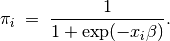
If the sample is generated via a case-control (or choice-based) design, such as when drawing all events (or “cases”) and a sample from the non-events (or “controls”) and going backwards to collect the explanatory variables, you must correct for selecting on the dependent variable. While the slope coefficients are approximately unbiased, the constant term may be significantly biased. Zelig has two methods for case control correction:
The “prior correction” method adjusts the intercept term. Let
be the true population fraction of events,
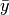 the fraction of events in the sample, and
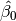 the uncorrected intercept term. The
corrected intercept 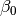 is:
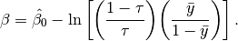
The “weighting” method performs a weighted logistic regression to
correct for a case-control sampling design. Let the 1 subscript
denote observations for which the dependent variable is observed
as a 1, and the 0 subscript denote observations for which the
dependent variable is observed as a 0. Then the vector of weights

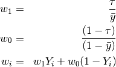
If is unknown, you may alternatively specify an upper
and lower bound for the possible range of . In this case,
the relogit procedure uses “robust Bayesian” methods to generate a
confidence interval (rather than a point estimate) for each quantity
of interest. The nominal coverage of the confidence interval is at
least as great as the actual coverage.
By default, estimates of the the coefficients  are
bias-corrected to account for finite sample or rare events bias. In
addition, quantities of interest, such as predicted probabilities,
are also corrected of rare-events bias. If 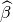
are the uncorrected logit coefficients and
bias() is the bias term, the corrected
coefficients 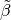 are
are
bias-corrected to account for finite sample or rare events bias. In
addition, quantities of interest, such as predicted probabilities,
are also corrected of rare-events bias. If 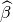
are the uncorrected logit coefficients and
bias() is the bias term, the corrected
coefficients 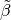 are
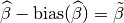
The bias term is
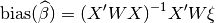
where
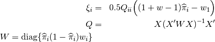
where and  are given in the “weighting”
section above.
are given in the “weighting”
section above.
For either one or no :
The expected values (qi$ev) for the rare events logit are simulations of the predicted probability

given draws of from its posterior.
The predicted value (qi$pr) is a draw from a binomial distribution
with mean equal to the simulated  .
.
The first difference (qi$fd) is defined as
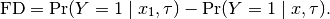
The risk ratio (qi$rr) is defined as
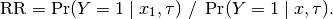
For a range of defined by 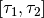, each
of the quantities of interest are 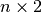 matrices, which
report the lower and upper bounds, respectively, for a confidence
interval with nominal coverage at least as great as the actual
coverage. At worst, these bounds are conservative estimates for the
likely range for each quantity of interest. Please refer to for the
specific method of calculating bounded quantities of interest.
In conditional prediction models, the average expected treatment effect (att.ev) for the treatment group is
![\frac{1}{\sum_{i=1}^n t_i}\sum_{i:t_i=1}^n \left\{ Y_i(t_i=1) -
E[Y_i(t_i=0)] \right\},](_images/math/f120915a77efb3200aab141647a59f51df9b4611.png)
where  is a binary explanatory variable defining the
treatment (
is a binary explanatory variable defining the
treatment ( ) and control (
) and control ( ) groups.
Variation in the simulations are due to uncertainty in simulating
) groups.
Variation in the simulations are due to uncertainty in simulating
![E[Y_i(t_i=0)]](_images/math/f658a3cf4cf830cd65eab505c530fb4796fea0ed.png) , the counterfactual expected value of
for observations in the treatment group, under the
assumption that everything stays the same except that the treatment
indicator is switched to .
, the counterfactual expected value of
for observations in the treatment group, under the
assumption that everything stays the same except that the treatment
indicator is switched to .
In conditional prediction models, the average predicted treatment effect (att.pr) for the treatment group is

where is a binary explanatory variable defining the
treatment () and control () groups.
Variation in the simulations are due to uncertainty in simulating
 , the counterfactual predicted value of
for observations in the treatment group, under the
assumption that everything stays the same except that the treatment
indicator is switched to .
, the counterfactual predicted value of
for observations in the treatment group, under the
assumption that everything stays the same except that the treatment
indicator is switched to .
The output of each Zelig command contains useful information which you may view. For example, if you run z.out <- zelig(y ~ x, model = relogit, data), then you may examine the available information in z.out by using names(z.out), see the coefficients by using z.out$coefficients, and a default summary of information through summary(z.out).
The Stata version of ReLogit and the R implementation differ slightly in their coefficient estimates due to differences in the matrix inversion routines implemented in R and Stata. Zelig uses orthogonal-triangular decomposition (through lm.influence()) to compute the bias term, which is more numerically stable than standard matrix calculations.